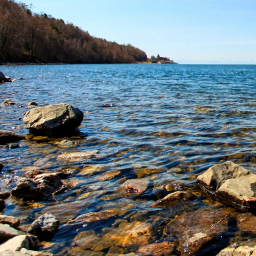

Путешествия по Байкалу
Туры по самому красивому месту России. Поехали с нами за новыми впечатлениями!


Основные направления деятельности
-
Групповые и индивидуальные туры по Байкалу для российских и иностранных туристов
-
Профессиональная организация охоты и рыбалки на Байкале
-
Экскурсии по городу Улан-Удэ, Республике Бурятия,городу Иркутск
-
Аренда автотранспорта для экскурсий и пассажирских перевозок
Услуги гидов-переводчиков на любом иностранном языке
Бронирование гостиниц в городе Улан-Удэ и на Байкале
Круизы и прогулки по Байкалу на теплоходах и катерах
-
Организация индивидуальных туров и VIP-туров на Байкале
Призыв
Байкальский отдых с нами – это легко!- 
На сайте туристического агентства «Байкальский отдых» вы найдете всю необходимую информацию о туристических базах отдыха на озере Байкал. Любите ли вы отличный сервис и европейский комфорт или предпочитаете прочувствовать все трудности дикого туризма и окунуться в атмосферу байкальской природы, здесь вы сможете найти турбазу по своему вкусу.
Туристические базы отдыха на Байкале предоставляют разнообразные условия размещения, они отличаются по перечню предлагаемых услуг и уровню комфорта.
Есть большие турбазы с полностью организованным питанием и вечерними дискотеками, есть также небольшие малолюдные базы всего с несколькими коттеджами. Можно арендовать отдельный гостевой домик с кухней и готовить пищу самостоятельно.
Среди этого многообразия обязательно найдется подходящая, именно вам, база отдыха. Тем не менее, Байкал, до сих пор, обладает всеми оттенками дикого экотуризма, чем и привлекает, уставших от городской суеты, туристов.
Если вы предпочитаете зимний байкальский отдых, к Вашим услугам круглогодичные отапливаемые турбазы и различные зимние развлечения. Байкал зимой поражает кристальной чистотой и прозрачностью льда.
Туристы очень любят отмечать Новогодние праздники и Рождество на турбазах Байкала, так как новый год на Байкале отличается особым волшебством. Развлекательную новогоднюю программу готовит почти каждая турбаза.
Наши достижения
-
7лет успешной работы
-
250+отелей на Байкале
-
100+различных туров
-
32 000кв. км – площадь на которой мы организовываем путешествия
-
50 000довольных туристов от 3 до 85 лет